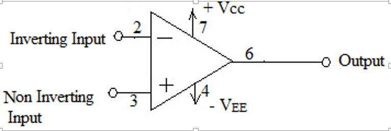
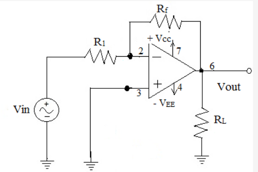

Theory
Operational amplifier called as Op-amp is a device used to amplify dc as well as ac input signals. An Op-amp basically is a direct-coupled high gain amplifier that is constructed from one or more differential amplifiers followed by a level translator and an output stage. All these circuits are integrated together in the form of 8 pin IC. μA 741 and OP 07 are the most commonly used ICs in the laboratory. The standard supply voltages required for linear Op-amp are ± 15 V whereas digital ICs require only one power supply. Op-amp is basically designed to perform mathematical operations such as addition, subtraction, multiplication and integration. Hence the name operational amplifier. Op-amp serves as a basic building block in a variety of day to day applications such as amplifiers, active filters, oscillators, comparators and others. The schematic symbol of an Op-amp (with supply connections) is shown below:  The characteristics of an ideal Op-amp are listed below: 1. Infinite input voltage gain. 2. Infinite input resistance. 3. Zero output resistance. 4. Zero output voltage. 5. Infinite bandwidth. 6. Infinite common-mode rejection ratio. 7. Infinite slew rate. Op-amps can be used in either of the three open-loop configurations viz. Differential, Inverting & Non-inverting. But the output of open-loop Op-amp is either positive saturation or negative saturation, which is undesirable in linear applications. Introducing negative feedback to the input stabilizes the gain but to a value lesser than the open-loop gain. Introducing positive feedback is necessary in oscillator design. There are four ways of implementing closed-loop configurations viz. voltage series, voltage shunt, current series and current shunt. Either voltage or current is fed back to the input in series or parallel. Voltage-shunt feedback and voltage-series feedback configurations are called as inverting and non-inverting amplifiers respectively. In inverting amplifier configuration the input is given to the inverting terminal, hence the output obtained is inverted i.e. 1800 out of phase with the applied input. In case of non-inverting amplifier, the input is applied to the non-inverting input. The output and input are in phase. The input resistance of an inverting amplifier is smaller as it depends on the series resistance connected to the input- signal-source. The inverting amplifier (voltage-shunt feedback amplifier) configuration is shown below.  In the circuit above, the non-inverting input is grounded and the input signal is applied to the inverting terminal via resistor R1. Considering the characteristics of ideal amplifier, the voltage at inverting terminal is approximately equal to that at the non-inverting terminal i.e. the inverting terminal is at approximately ground potential. Therefore the inverting terminal is said to be at virtual ground. The virtual ground concept simplifies the analysis of Op-amp circuits. Applying Kirchhoff's current law at input node and concept of virtual ground, the closed loop voltage gain can be derived. The closed loop gains Af=vo/vi= -Rf/R1 (ideal expression for gain) and Af=vo/vi= -ARf/(R1+Rf+Ar1) (exact expression for gain) Applying Miller's theorem the input resistance with feedback can be derived to give an expression: RiF=R1+(Rf/(1+A))in parallel with Ri (exact expression) RiF=R1 (ideal expression) Applying Thevenin's theorem, the output resistance with feedback Rof can be derived as Rof=Ro/(1+AB) Where Ro is the output resistance of the Op-amp, A is the open-loop voltage gain of the Op-amp and B is the gain of the feedback circuit. Bandwidth of an amplifier is defined as the range of frequencies for which the gain remains constant. For an Op-amp with single break frequency fo, the gain-bandwidth product is constant, and equal to the unity- gain bandwidth (UGB). As gain with feedback is always less than the gain without feedback, the bandwidth of the amplifier with feedback would be obviously greater than without feedback. fF = f0 (1 + AB) By varying the frequency of the ac input signal for a fixed input signal, the output voltage can be measured using an oscilloscope. The bandwidth of the amplifier can be measured from this frequency response.